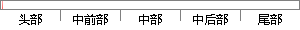

此外，该系统还有任务延时、挂起、删除等基本操作。
片段位置图

相似结果
相似片段：删除、维护等基本操作,此外,还有文件的寻址,文件访问...(中断控制寄存器)到0x00223064(快速中断挂起低寄存...同时对于任务延时结束的任务将其置回就绪队列中.在...
| 标题 | 《基于ARM9核处理器的存储卡操作系统的研究实现及电力线上网流量控制软件设计》 |
| 对比库 | 中国学位论文全文数据库 |
| 作者 | 李想 |
| 机构 | 北京邮电大学 |
| 分类 | 通信与信息系统 |
| 年份 | 2007 |
| 相似率 | 77.78% （轻度抄袭） |
※ 片段修改建议 ※
近似词参考：- 操作：操纵
- 基本：根基 根本
- 任务：使命 义务
- 此外：另外 别的
系统自动生成语句：另外，该系统还有使命延时、挂起、删除等根基操纵。
注：本片段修改建议为系统自动生成，仅供参考。